Git 规范总结¶
一直都是简单的使用git, 并且idea已经有较好的可视化工具。需要系统总结使用方式。
Local¶
level0¶
commit¶
定义
Git 仓库中的提交记录保存的是你的目录下所有文件的快照，就像是把整个目录复制，然后再粘贴一样，但比复制粘贴优雅许多！
Git 希望提交记录尽可能地轻量，因此在你每次进行提交时，它并不会盲目地复制整个目录。条件允许的情况下，它会将当前版本与仓库中的上一个版本进行对比，并把所有的差异打包到一起作为一个提交记录。
Git 还保存了提交的历史记录。这也是为什么大多数提交记录的上面都有 parent 节点的原因 —— 我们会在图示中用箭头来表示这种关系。对于项目组的成员来说，维护提交历史对大家都有好处。
使用
比如现在的版本控制链上已经有几个节点了，你可以将当前的main追加到parent节点之后，作为新的版本。
| Text Only | |
|---|---|
1 | |
branch & checkout¶
定义
分支只是简单的指向某个提交记录而已，并且建立再多的分支也不会造成存储的开销，所以可以按照逻辑将工作分解为不同的分支，
使用分支的含义，简单来说就是我想基于当前的某个提交，以及它的所有parent提交进行新的工作。
创建分支，使用branch。而切换分支，使用checkout。
使用
可以在基于某个commit，比如当前main所指向的commit创建分支。
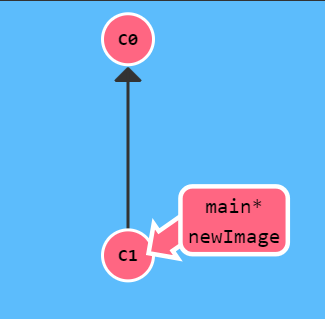
这里直接commit的话还是会将main向后推，因为星号还在main上。
所以需要切换分支到newImage之后，再进行commit.
| Text Only | |
|---|---|
1 2 | |
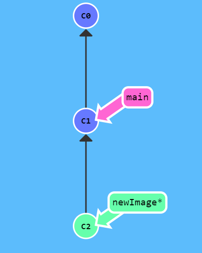
其中，创建新分支和切换到新分支可以一步完成:
| Text Only | |
|---|---|
1 | |
merge¶
定义
分支有了，并且可以基于分支进行开发，那如何将分支合并回原来的分支呢？就需要使用merge。
在 Git 中合并两个分支时会产生一个特殊的提交记录，它有两个 parent 节点。翻译成自然语言相当于：我要把这两个 parent 节点本身及它们所有的祖先都包含进来。
现在情况如下:
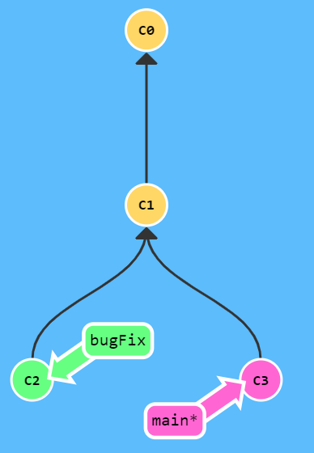
可以看到，基于c1 commit，出现了两个分支:也就是c2,c3，两者都做了进一步的开发，以及提交，也就是有了新的版本。
将分支垂直，则其中main所在的可以看做主分支竖直往下，而bugfix是叉出来的分支。
使用
| Text Only | |
|---|---|
1 | |

也就是当前的最新版本，即c4，是同时依赖于上述的主分支，以及要合并的分支的。
同时依赖，也就是说从当前节点出发，可以回溯到所有的历史版本，这就是符合了merge的语义。可以看到，所有位置都被 mix in 主分支的颜色。
但是现在，bugfix分支并不是最新的，它不能访问所有的节点，怎么办？
| Text Only | |
|---|---|
1 | |
这样之后，由于要符合merge后的当前节点需要包含两个parent的节点的所有路径；而main又已经包含了parent，则如下:
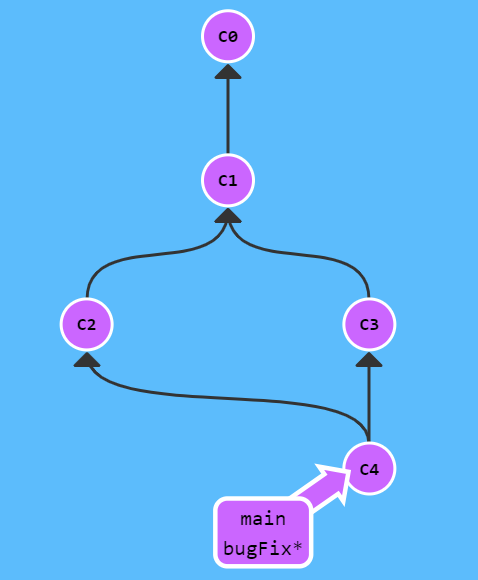
则当前的所有的分支都是最新的。
rebase¶
定义
merge和rebase是合并分支的两种方式，后者可以创建更加线性的commit历史记录。
具体而言，rebase就是取出一系列的提交记录，复制它们，然后在另一个地方逐个放下去。
其实从rebase这个单词就可以看出含义了，具体就是为当前分支所指向的最新版本，重新选择基底，而不是原来的基底。从而变得线性。
就是将并行开发的两个分支，修改为串行开发的结构。
使用
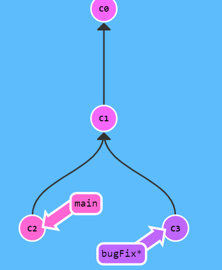
当前在bugFix分支上。如果要将当前的分支合并到主分支。
首先，执行
| Text Only | |
|---|---|
1 | |
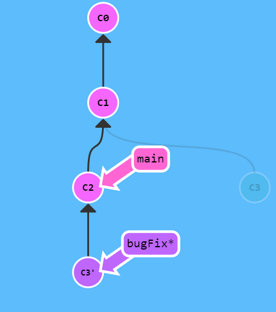
可以看到，，当前的bugFix已经变为最新，并且可以回溯到所有的历史版本(进行染色了)。
只有一个问题，就是说main没有更新。很显然，我们只需要让main以最新版本为基底就可以。
| Text Only | |
|---|---|
1 | |
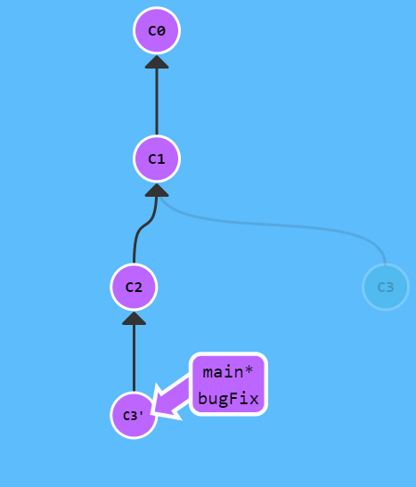
level1¶
HEAD¶
注意需要大写，否则有些情况可能会出错。
HEAD 总是指向当前分支上最近一次提交记录。大多数修改提交树的 Git 命令都是从改变 HEAD 的指向开始的。
也就是我们总是从head出发的。
但是默认head并不是指向最近的commit的，而是指向当前分支名称(可以视作指针的指针)。如果要直接指向某个提交记录(通常是哈希名称)，需要如下：
| Text Only | |
|---|---|
1 | |
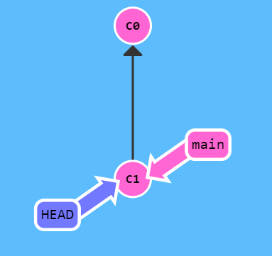
相对引用¶
定义
OK，已知可以直接将head切换到对应哈希值的commit上。但是哈希值太长怎么办？
- 使用tab键
- 使用相对引用
这里可以看到，其实就是在操作文件系统
使用
^是上一级~num是向上num级
| Text Only | |
|---|---|
1 | |
上述命令，就是将head移动到main分支的上一个版本(其实就是*的移动)
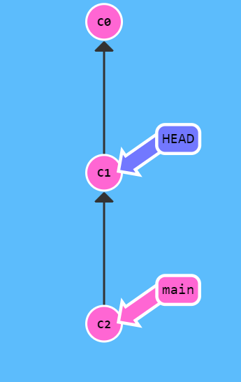
并且可以将head作为引用的参照(就和cd ../../一个道理)。
如果要一次向上三步，则就是
| Text Only | |
|---|---|
1 | |
其他
还有一个强制修改分支位置。
| Text Only | |
|---|---|
1 | |
强制将main分支指向head向上的第三级parent commit。
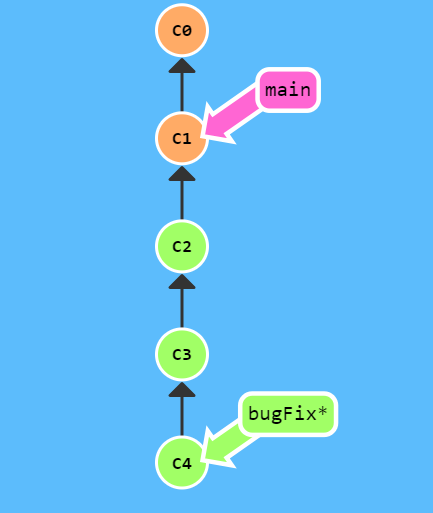
reset & revert¶
撤销/回退变更，有两种方式:
- reset：用于本地撤销
- revert：用于远程撤销
定义
| Text Only | |
|---|---|
1 | |
就是将当前分支的版本控制回退到上一个版本。
| Text Only | |
|---|---|
1 | |
它是为了撤销，并将其分享给别人。
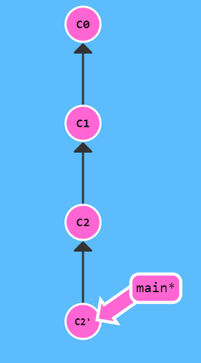
可以看到，从c2位置执行这行命令，则会多出来一个修改版本，它是用来将状态修改会c1的，也就是说，它是c2的反操作，将状态回退到c1。
Remote¶
将代码进行远程版本控制，有两个作用
- 进行代码备份，即使本地的数据丢失，也可以从远端仓库拿回丢失的代码
- 远程代码社交化，也就是可以进行多人协作管理
Level0¶
clone & checkout¶
定义
clone就是将远端的代码在本地存储一份。
这个含义就是在本地创建一个远程分支(在此处的名称是o/main)。远程分支反映了远程仓库的状态，是团队合作共享结果的重要节点。
切换到远程分支之后，会自动进入分离HEAD状态。
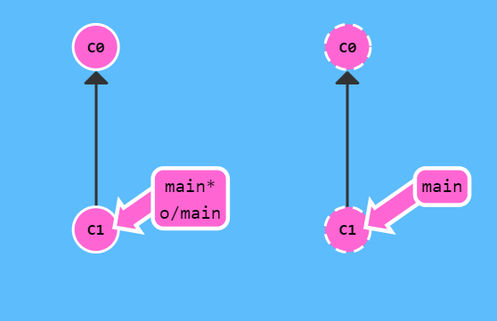
命名
远端分支的命名，是remove-name/branch-name。
其中，远端分支名称，默认是origin。
使用
| Text Only | |
|---|---|
1 | |
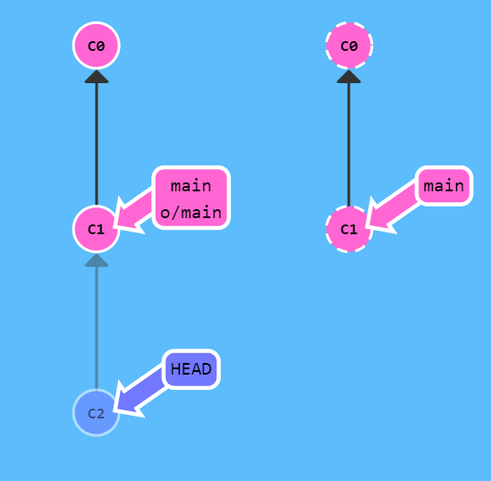
可以看到，进行上述命令后，由于是分离HEAD模式，只有本地的HEAD移动了，记录了变更。
fetch¶
定义
和远端仓库的交互，可以被归纳为两部分:
- 推送
- 拉取
而fetch就是为了完成拉取的环节。
它只是将本地的远程分支更新，并不会动本地的主分支。
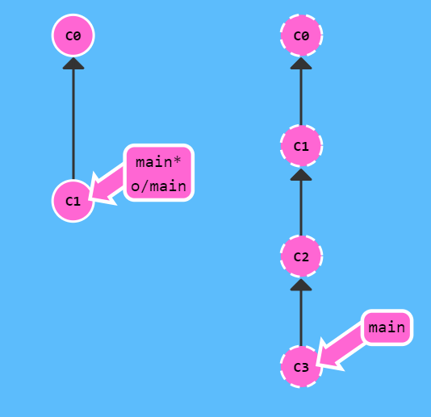
| Text Only | |
|---|---|
1 | |
执行完git fetch之后，如下:
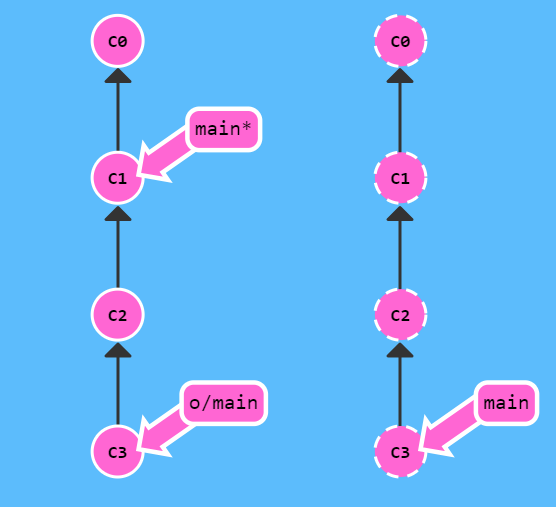
语义就是将远端仓库的变更，下载到本地，并应用到本地对应着远端的o/main分支。
其实就是: 将本地仓库中的远程分支更新成了远程仓库相应分支最新的状态(通信时候的最新状态)。
git fetch并不会改变本地仓库的状态，不会更新
main分支，最根本的，它就没有修改之前的磁盘文件。只是单纯的将commit下载下来。
pull¶
定义
实际上，常见的工作流程是:
- 拉取远端数据到本地(此时会只会更新远程分支，并没有合并主分支)
- 将远程分支和主分支合并
Git将这两者封装为一个原子操作:Pull
站在当前的main*上，则
| Text Only | |
|---|---|
1 | |
等价于
| Text Only | |
|---|---|
1 | |
使用
常见的使用方式如下:
- 将远端代码
clone下来 - 远端代码有变更（其他人修改）
- 本地代码也有变更(本地commit)
git pull将远程分支更新为最新，然后和本地main分支合并
push¶
定义
负责将本地变更上传到远端。
使用
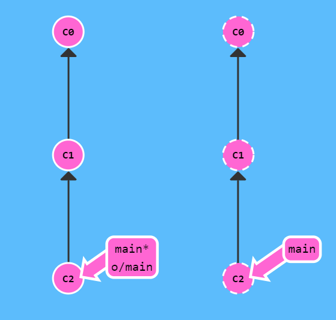
如果本地是c1 -> c2，而远程仓库是c1，则执行如下:
| Text Only | |
|---|---|
1 | |
结果为上图所示，远端分支更新，同时更新本地远程分支和此时的远端分支一致。
rebase & push¶
这里就是一个常见的场景，常见的活跃项目的开源贡献，通常你可能刚clone完毕，就有人将远程仓库修改了，这时候你的本地代码，和远端代码就会有交叉diff，则不能使用push。
rebase & push
| Text Only | |
|---|---|
1 | |
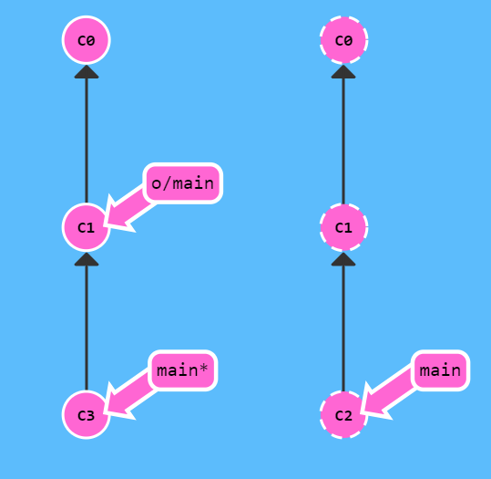
未修改前如上图，有交叉diff。
修改完毕如下图:
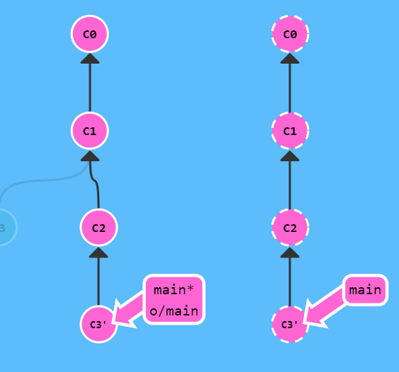
而git同样提供了原子操作:
- git fetch;git rebase o/main ;git push
- git pull --rebase ; git push
两者完全等价
push feature¶
场景
就是常规情况，共享仓库的main分支被锁住了，只能让管理员通过Pull Request的方式进行合并。也就是说，你不能直接push来更新Main分支了。
解决办法
创建一个分支feature,推送到远程服务器，然后将本地的main分支和远程服务器保持一致。
| Text Only | |
|---|---|
1 2 3 4 | |
常见工作流程¶
开源贡献¶
注意git add命令:
- git add . 所有修改或者新增，删除
- git add -u 所有修改
- git add -p 互动式选择
关于:local,origin,upstream：